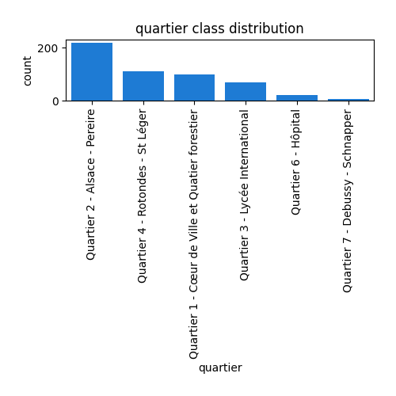

Exploratory Data Analysis
<< Go back
Feature : target
- Feature type : categorical
- Missing : 0.0%
- Unique : 6
- Count :531
- Unique :6
- Top :C2
- Freq :308

Feature : quartier
- Feature type : categorical
- Missing : 0.0%
- Unique : 6
- Count :531
- Unique :6
- Top :Quartier 2 - Alsace - Pereire
- Freq :219

Feature : site
- Feature type : categorical
- Missing : 0.0%
- Unique : 29
- Count :531
- Unique :29
- Top :Avenue du Maréchal Foch
- Freq :85
Feature : cote_voirie
- Feature type : categorical
- Missing : 0.0%
- Unique : 2
- Count :531
- Unique :2
- Top :Impair
- Freq :359
Feature : matricule_arbre
- Feature type : discrete
- Missing : 0.0%
- Unique : 74
- Count :531.0
- Mean :21.99623352165725
- Std :17.95991303856764
- Min :1.0
- 25%th Percentile : 7.0
- 50%th Percentile : 18.0
- 75%th Percentile : 32.0
- Max :74.0

Feature : genre_arbre
- Feature type : categorical
- Missing : 0.0%
- Unique : 24
- Count :531
- Unique :24
- Top :Tilia
- Freq :264

Feature : espece_arbre
- Feature type : categorical
- Missing : 1.1299435028248588%
- Unique : 36
- Count :525
- Unique :36
- Top : Europaea - - Pallida
- Freq :243

Feature : situation
- Feature type : categorical
- Missing : 0.18832391713747645%
- Unique : 4
- Count :530
- Unique :4
- Top :Alignement
- Freq :491
Feature : type_sol
- Feature type : categorical
- Missing : 0.0%
- Unique : 9
- Count :531
- Unique :9
- Top :Gr
- Freq :222

Feature : surf_permeable
- Feature type : continous
- Missing : 0.0%
- Unique : 9
- Count :531.0
- Mean :7.102636534839925
- Std :20.86565998525985
- Min :0.0
- 25%th Percentile : 1.0
- 50%th Percentile : 1.5
- 75%th Percentile : 4.0
- Max :100.0

Feature : date_plantation
- Feature type : discrete
- Missing : 0.0%
- Unique : 11
- Count :531.0
- Mean :1995.1864406779662
- Std :79.33940159836452
- Min :200.0
- 25%th Percentile : 1980.0
- 50%th Percentile : 2000.0
- 75%th Percentile : 2010.0
- Max :2019.0

Feature : classe_age
- Feature type : categorical
- Missing : 0.0%
- Unique : 4
- Count :531
- Unique :4
- Top :A
- Freq :284
Feature : hauteur
- Feature type : discrete
- Missing : 0.0%
- Unique : 17
- Count :531.0
- Mean :691.9962335216572
- Std :333.2048041298637
- Min :250.0
- 25%th Percentile : 500.0
- 50%th Percentile : 600.0
- 75%th Percentile : 800.0
- Max :2500.0

Feature : classe_hauteur
- Feature type : categorical
- Missing : 0.0%
- Unique : 5
- Count :531
- Unique :5
- Top :H2
- Freq :259
Feature : diametre
- Feature type : continous
- Missing : 0.0%
- Unique : 39
- Count :531.0
- Mean :45.925342750117835
- Std :26.379359193274592
- Min :12.732395447351628
- 25%th Percentile : 28.64788975654116
- 50%th Percentile : 38.197186342054884
- 75%th Percentile : 57.29577951308232
- Max :222.81692032865345

Feature : circonference (en cm)
- Feature type : discrete
- Missing : 0.0%
- Unique : 39
- Count :531.0
- Mean :72.13935969868173
- Std :41.43660052399891
- Min :20.0
- 25%th Percentile : 45.0
- 50%th Percentile : 60.0
- 75%th Percentile : 90.0
- Max :350.0
Feature : classe_circonference
- Feature type : categorical
- Missing : 0.0%
- Unique : 7
- Count :531
- Unique :7
- Top :C2
- Freq :250
Feature : port_arbre
- Feature type : categorical
- Missing : 0.0%
- Unique : 4
- Count :531
- Unique :4
- Top :R5
- Freq :243

Feature : vigueur_pousse
- Feature type : categorical
- Missing : 0.0%
- Unique : 4
- Count :531
- Unique :4
- Top :P
- Freq :470
Feature : plaie_collet
- Feature type : categorical
- Missing : 1.3182674199623352%
- Unique : 7
- Count :524
- Unique :7
- Top :RCPPL
- Freq :280

Feature : rejet_tronc
- Feature type : categorical
- Missing : 1.3182674199623352%
- Unique : 2
- Count :524
- Unique :2
- Top :Non
- Freq :477
Feature : tuteurage_arbre
- Feature type : categorical
- Missing : 0.0%
- Unique : 4
- Count :531
- Unique :4
- Top :Non
- Freq :452
Feature : canisse_arbre
- Feature type : categorical
- Missing : 0.0%
- Unique : 2
- Count :531
- Unique :2
- Top :Non
- Freq :410

Feature : plaie_tronc
- Feature type : categorical
- Missing : 1.3182674199623352%
- Unique : 6
- Count :524
- Unique :6
- Top :TPLS
- Freq :310

Feature : champignon_houppier
- Feature type : categorical
- Missing : 1.3182674199623352%
- Unique : 2
- Count :524
- Unique :2
- Top :Non
- Freq :518
Feature : insecte_houppier
- Feature type : categorical
- Missing : 1.3182674199623352%
- Unique : 1
- Count :524
- Unique :1
- Top :Non
- Freq :524

Feature : fissure_houppier
- Feature type : categorical
- Missing : 1.3182674199623352%
- Unique : 3
- Count :524
- Unique :3
- Top :HPF
- Freq :521
Feature : bois_mort_houppier
- Feature type : categorical
- Missing : 1.3182674199623352%
- Unique : 3
- Count :524
- Unique :3
- Top :HPBM
- Freq :495

Feature : plaie_houppier
- Feature type : categorical
- Missing : 1.3182674199623352%
- Unique : 5
- Count :524
- Unique :5
- Top :HPLS
- Freq :397
Feature : esperance_maintien
- Feature type : continous
- Missing : 1.3182674199623352%
- Unique : 4
- Count :524.0
- Mean :1.3702290076335877
- Std :0.6719959319380361
- Min :1.0
- 25%th Percentile : 1.0
- 50%th Percentile : 1.0
- 75%th Percentile : 2.0
- Max :4.0

Feature : contrainte
- Feature type : categorical
- Missing : 1.3182674199623352%
- Unique : 2
- Count :524
- Unique :2
- Top :Non
- Freq :506
Feature : date_diagnostic
- Feature type : categorical
- Missing : 1.3182674199623352%
- Unique : 22
- Count :524
- Unique :22
- Top :2020/11/24
- Freq :66

Feature : prescription_1
- Feature type : categorical
- Missing : 0.0%
- Unique : 14
- Count :531
- Unique :14
- Top :tfo
- Freq :386

Feature : prescription_2
- Feature type : categorical
- Missing : 0.0%
- Unique : 7
- Count :531
- Unique :7
- Top :RT
- Freq :486

Feature : Long
- Feature type : continous
- Missing : 0.0%
- Unique : 34
- Count :531.0
- Mean :2.078207156308851
- Std :0.011444963694727767
- Min :2.061
- 25%th Percentile : 2.069
- 50%th Percentile : 2.074
- 75%th Percentile : 2.085
- Max :2.101

Feature : Lat
- Feature type : continous
- Missing : 0.0%
- Unique : 14
- Count :531.0
- Mean :48.89897551789077
- Std :0.0033749022997956496
- Min :48.888000000000005
- 25%th Percentile : 48.896
- 50%th Percentile : 48.9
- 75%th Percentile : 48.901
- Max :48.905
<< Go back